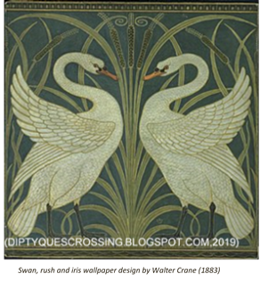

GENERAL DESCRIPTION AND TIMEFRAME
Art Nouveau is an international style of art, architecture and applied art, especially the decorative arts, In English it is known as the Modern Style (not to be confused with Modernism and Modern architecture).
The style was most popular between 1890 and 1910.It was a reaction to the academic art, eclecticism and historicism of 19th century architecture and decoration and was inspired by natural forms and structures, particularly the curved lines of plants and flowers, and whiplash forms. Other defining characteristics of Art Nouveau were a sense of dynamism and movement, often given by asymmetry and by curving lines, and the use of modern materials, such as iron pillars and railings, sculpted and curved in naturalistic designs.

Towards the end of the 19th century, some artists felt limited by the style of ‘academic art’ which had been popular for many decades. Initially in France, a few artists broke away from the rigours of the old academic style and started to create art that explored organic, highly decorative forms in a more stylized and sensual way.
In 1895, the art dealer Siegfried Bing opened the Maison de l’Art Nouveau, a new art gallery in Paris. Through the gallery, Bing sold fabrics designed by William Morris and glassware by Tiffany, and showcased paintings and furniture in the Art Nouveau style.
The first Art Nouveau houses and interior decoration appeared in Brussels in 1890s, in the architecture and interior design of houses designed by Paul Hankar, Henry Van de Velde, and especially Victor Horta, whose Hôtel Tassel in Brussels was completed in 1893. It moved quickly to Paris, where it was adapted by Hector Guimard, who saw Horta's work in Brussels and applied the style for the entrances of the new Paris Metro. It reached its peak at the 1900 Paris International Exposition, which introduced the Art Nouveau work of artists such as Louis Tiffany. It appeared in graphic arts in the posters of Alphonse Mucha, and the glassware of René Lalique and Émile Gallé.
By 1910, Art Nouveau's influence had faded. It was replaced as the dominant European architectural and decorative style first by Art Deco and then by Modernism.
Art Nouveau was a huge movement. It wasn’t only about architecture; it touched every artistic discipline. It dealt with architecture, of course, but also with furniture, pottery, painting, and embroidery. In an Art Nouveau home, the artists took care of everything—the jewelry, the dress of the patron, the furniture, the garden, the lights and lamps, the stained-glass windows, the staircase, even the wallpaper.
Art Nouveau artists did not work in isolation. They belonged to large groups that wanted to change lives, to bring art to all the different social classes, not just rich people but the labor classes, too. The idea was that Art Nouveau was designed for everybody, the poor and the rich. Some artists made furniture just for the labor classes; others designed very small houses to be filled with lots of inexpensive but beautiful factory-made objects. There was a very important glass production facility in Nancy that made some of its pieces in two versions—one copy for the rich, and one copy with less detail for everybody else. The idea was to make unique pieces for special clients as well as industrially produced items for the public at large.
Art Nouveau was not merely a fashion. It was a deep style and a serious movement. It wasn’t just a way to decorate houses but a way to find new solutions to create a better life. It wasn’t a trendy style. It was something with real content.
In the United States, Tiffany was very important, especially with all his work made in glass—the lamps, vases, and other beautiful objects. also, Tiffany took a lot of influence from Europe, but Europe was also influenced by the Tiffany style. The stained-glass windows all over Europe used the Tiffany technique, a very special melding of color and texture. So, the influence went in both directions. (WriteDesign, 2019)
MAIN FEATURES AND CHARACTERISTICS
- Style sinuous, elongated, curvy lines.
- The whiplash lines.
- Vertical lines and height.
- Stylized flowers, leaves, roots, buds and seedpods.
- Exotic woods, marquetry, iridescent glass, silver and semi-precious stone.
ARCHITECTURE
Art Nouveau architecture was a reaction against the eclectic styles that dominated European architecture in the second half of the 19th century. It was expressed through decoration: either ornamental (based on flowers and plants, e.g. thistles, irises, cyclamens, orchids, water lilies etc.) or sculptural. While faces of people (or mascarons) are referred to ornament, the use of people in different forms of sculpture (statues and reliefs) was also common in some forms of Art Nouveau. Before Vienna Secession, Jugendstil and the various forms of the National romantic style façades were asymmetrical, and often decorated with polychrome ceramic tiles. The decoration usually suggested movement; there was no distinction between the structure and the ornament. A curling or "whiplash" motif, based on the forms of plants and flowers, was widely used in the early Art Nouveau, but decoration became more abstract and symmetrical in Vienna Secession and other later versions of the style, as in the Palais Stoclet in Brussels (1905–1911).
The style first appeared in Brussels' Hankar House by Paul Hankar (1893) and Hôtel Tassel (1892–93) of Victor Horta. The Hôtel Tassel was visited by Hector Guimard, who used the same style in his first major work, the Castel Béranger (1897–98). Horta and Guimard also designed the furniture and the interior decoration, down to the doorknobs and carpeting. In 1899, based on the fame of the Castel Béranger, Guimard received a commission to design the entrances of the stations of the new Paris Métro, which opened in 1900. Though few of the originals survived, these became the symbol of the Art Nouveau movement in Paris.
In Paris, the architectural style was also a reaction to the strict regulations imposed on building facades by Georges-Eugène Haussmann, the prefect of Paris under Napoleon III. Bow windows were finally allowed in 1903, and Art Nouveau architects went to the opposite extreme, most notably in the houses of Jules Lavirotte, which were essentially large works of sculpture, completely covered with decoration. An important neighbourhood of Art Nouveau houses appeared in the French city of Nancy, around the Villa Majorelle (1901–02), the residence of the furniture designer Louis Majorelle. It was designed by Henri Sauvage as a showcase for Majorelle's furniture designs.
INTERIORS AND FURNITURE
Floors - are parquet and should be stained and varnished.
Color schemes - are quite muted and sombre and became known as 'greenery yallery' - mustard, sage green, olive green, and brown. Team these with lilac, violet and purple, peacock blue. Mackintosh experimented with all-white interiors.
Walls - can either be painted in one of the colors of the palette or off-white or papered.
Wallpaper - designs are highly stylized flowers, particularly poppies, water lilies and wisteria; branches, tendrils, leaves, stems, thistles, pomegranates; peacock feathers, birds and dragonflies.
Tiles - use in panels and intersperse patterned ones with white. A technique called tube lining was used to make the design stand out from the surface - think of piping icing on a cake.
Furniture - Mackintosh is renowned for extremely high-backed chairs in glossy black lacquer. If that's not your style go for curvy shapes upholstered in a stylized floral fabric.
Flowers - and peacock feathers are the epitome of art nouveau style. (Horth, 2009)
PRINCIPAL DESIGNERS
| Name | Year |
|---|---|
| Victor Horta | 1861-1947 |
| Henry van de Velde | 1863-1957 |
| Charles Rennie Mackintosh | 1868-1928 |
| Louis Comfort Tiffany | 1848-1933 |
| René Lalique | 1860-1945 |